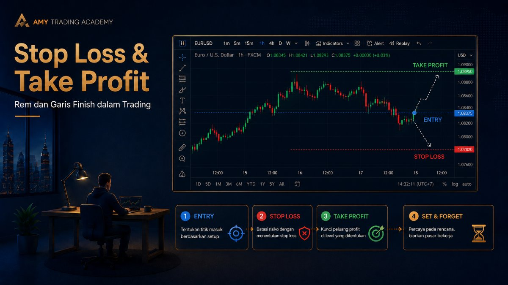
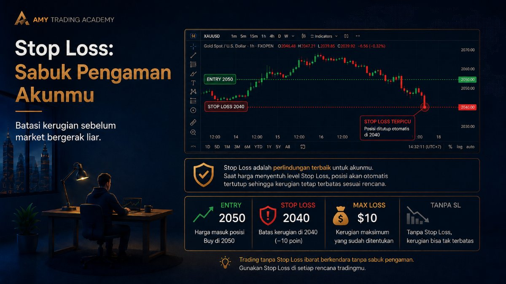
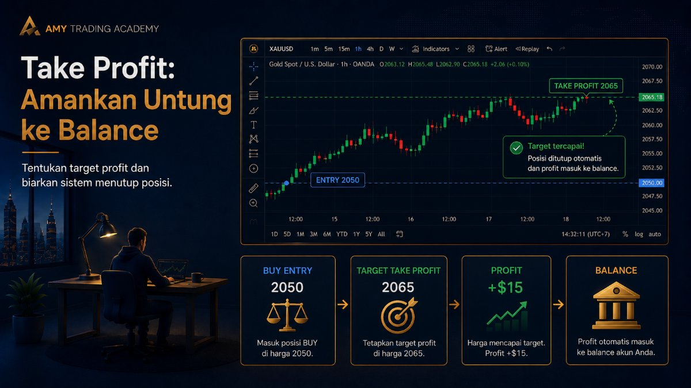
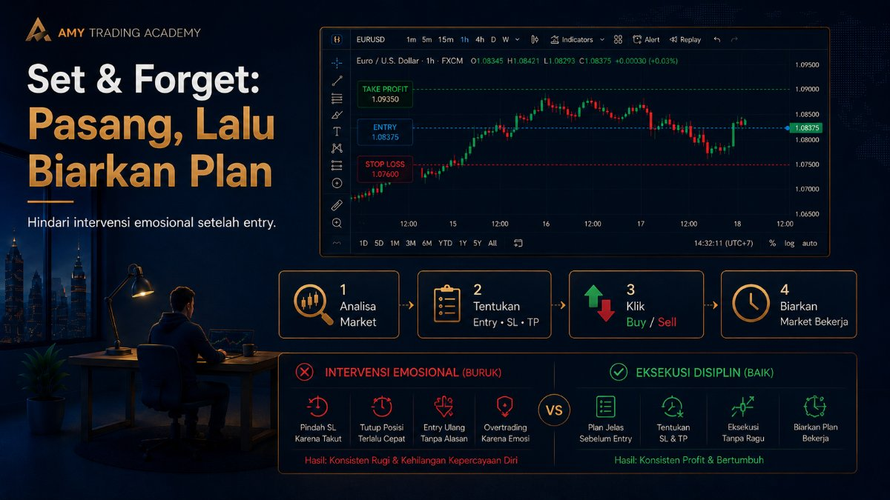
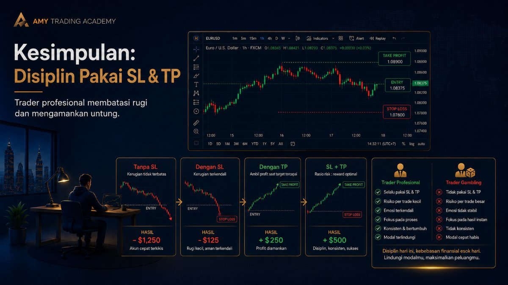

Stop Loss dan Take Profit

Bayangkan kamu sedang mengendarai mobil balap yang kecepatannya luar biasa tinggi. Mesinnya canggih, bensinnya penuh. Tapi, saat kamu melihat ke bawah... mobil itu tidak punya rem. Apakah kamu berani menginjak pedal gasnya? Tentu saja tidak, karena kamu tahu tabrakan maut tinggal menunggu waktu.
Di dunia trading, mobil balap itu adalah market, dan rem itu adalah Stop Loss (SL). Sementara itu, Take Profit (TP) adalah garis finish atau stasiun tujuanmu. Mari kita bahas dua fitur keselamatan paling krusial yang disediakan oleh setiap broker ini.
1. Stop Loss (SL): Sabuk Pengaman Akunmu

Stop Loss adalah sebuah titik harga (level) yang kamu tentukan di awal, di mana sistem akan menutup posisimu secara otomatis jika harga menyentuh titik tersebut, dengan tujuan membatasi kerugianmu.
Sederhananya: SL adalah titik di mana kamu mengakui, "Oke, analisaku salah. Aku menyerah di sini sebelum kerugianku makin parah."
Contoh Kasus:
- Kamu menganalisa Gold akan naik, jadi kamu Buy di harga $2050.
- Kamu siap rugi maksimal $10 per troy ounce. Jadi, kamu pasang Stop Loss di harga $2040.
- Tiba-tiba, ada berita besar (misal perang atau inflasi), dan harga Gold terjun bebas ke $2000.
Apa yang terjadi? Karena kamu sudah memasang SL di $2040, sistem broker langsung memotong posisimu saat harga menyentuh angka itu. Kamu hanya rugi selisih $10. Coba bayangkan kalau kamu TIDAK pasang SL? Kamu akan terseret turun sampai $2000, yang artinya kamu rugi $50 per troy ounce. Akunmu mungkin sudah Margin Call (hangus)!
Penyakit Terbesar Pemula:
"Ah, mending nggak usah pasang SL, nanti juga harganya balik naik kok."
Ini adalah mindset penjudi. Market tidak pernah peduli dengan harapanmu. Sekali market memutuskan untuk membentuk tren kuat, dia akan terus melaju tanpa ampun. Lebih baik kehilangan 2% dari modal hari ini, daripada kehilangan 100% dan tidak bisa trading besok.
2. Take Profit (TP): Mengamankan Uang ke Kantong

Kalau SL berfungsi untuk membatasi kerugian, maka Take Profit (TP) berfungsi untuk mengamankan keuntunganmu. TP adalah titik harga di mana sistem akan menutup posisimu secara otomatis saat harga mencapai target tersebut, dan uang profit langsung masuk ke Balance-mu.
Kenapa TP itu penting? Bukankah lebih enak dibiarkan saja biar untungnya makin banyak?
Masalahnya, market itu bergerak naik turun seperti ombak. Sangat sering terjadi, harga sudah hampir menyentuh target, lalu tiba-tiba berbalik arah 180 derajat dan malah menyentuh Stop Loss. Kalau kamu tidak punya garis finish (TP) yang jelas, atau kalau kamu tidak rajin "mengamankan" profitmu, hasil jerih payah analisamu bisa lenyap begitu saja dimakan market.
"Set and Forget" (Pasang dan Lupakan)

Satu hal yang paling merusak psikologi trader pemula adalah kebiasaan terus-menerus menatap layar HP setelah membuka posisi (Entry).
Mereka melihat harga turun dikit, panik, lalu SL-nya digeser menjauh supaya tidak kena. Harga naik dikit, mereka tidak sabar, langsung di-close padahal belum sampai TP. Akhirnya, saat rugi jumlahnya besar, saat untung jumlahnya sangat kecil.
Trader profesional selalu menerapkan prinsip Set and Forget:
- Analisa market.
- Tentukan di mana titik Entry, Stop Loss, dan Take Profit.
- Klik Buy atau Sell.
- Tutup aplikasi, dan biarkan market bekerja.
Biarkan hasil akhirnya hanya salah satu dari dua ini: Menyentuh SL (kamu rugi sesuai batas wajar) ATAU Menyentuh TP (kamu untung sesuai target). Jangan campur tangan (intervensi) di tengah jalan karena saat itu emosimu sedang labil.
Kesimpulan

Membuka posisi tanpa Stop Loss itu seperti melompat dari pesawat tanpa parasut. Mungkin satu atau dua kali kamu kebetulan jatuh di atas tumpukan jerami dan selamat, tapi cepat atau lambat, kamu pasti akan hancur lebur. Disiplin menggunakan SL dan TP adalah pembatas yang membedakan antara trader profesional dan orang yang buang-buang uang.